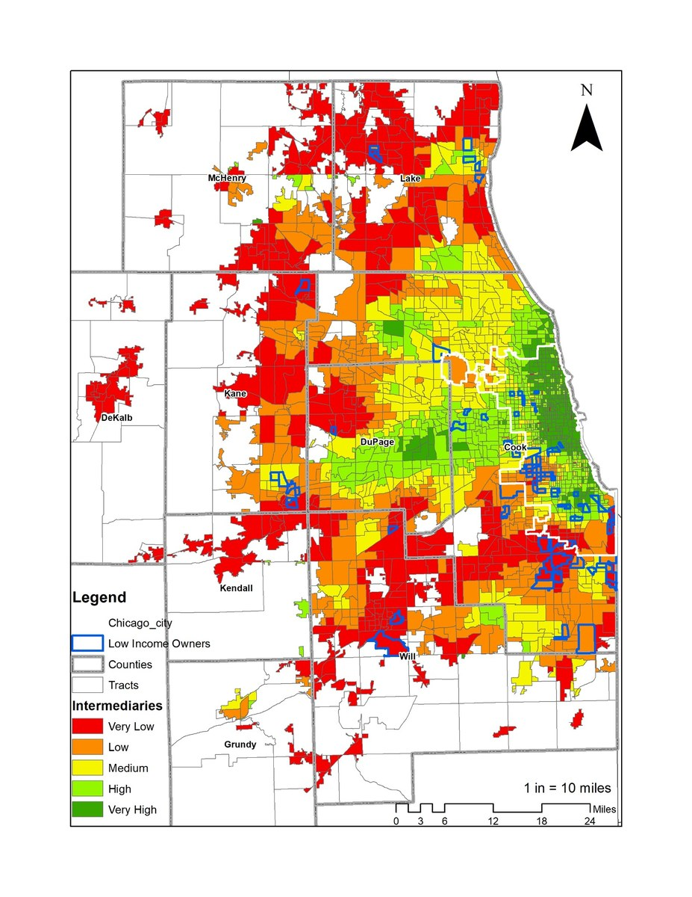
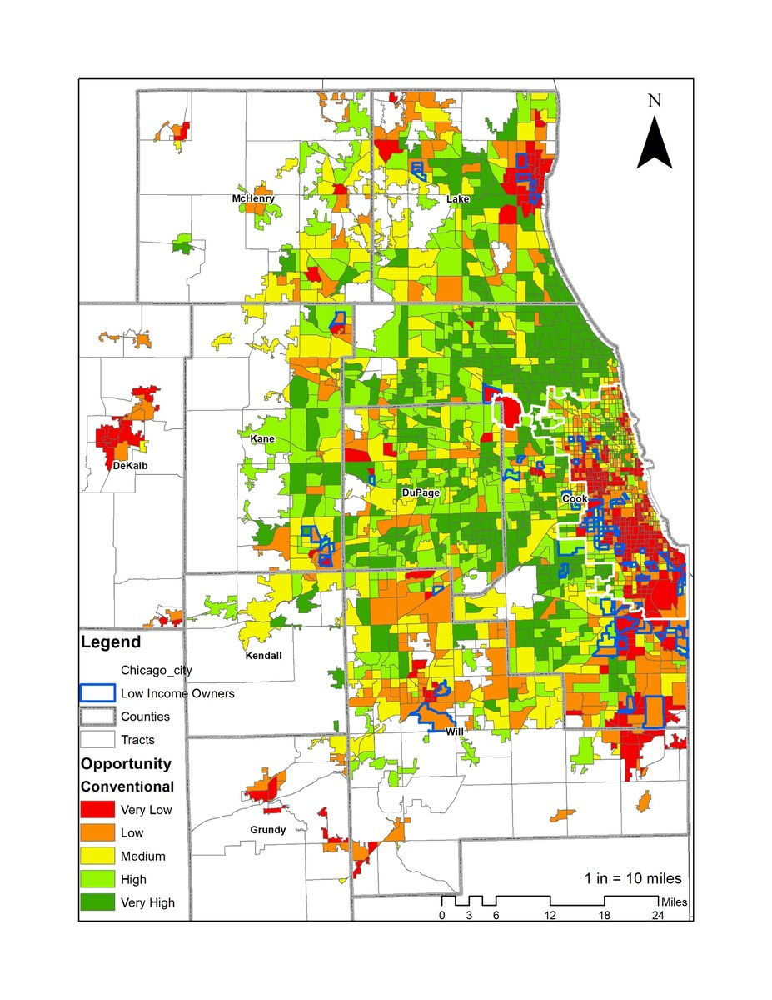
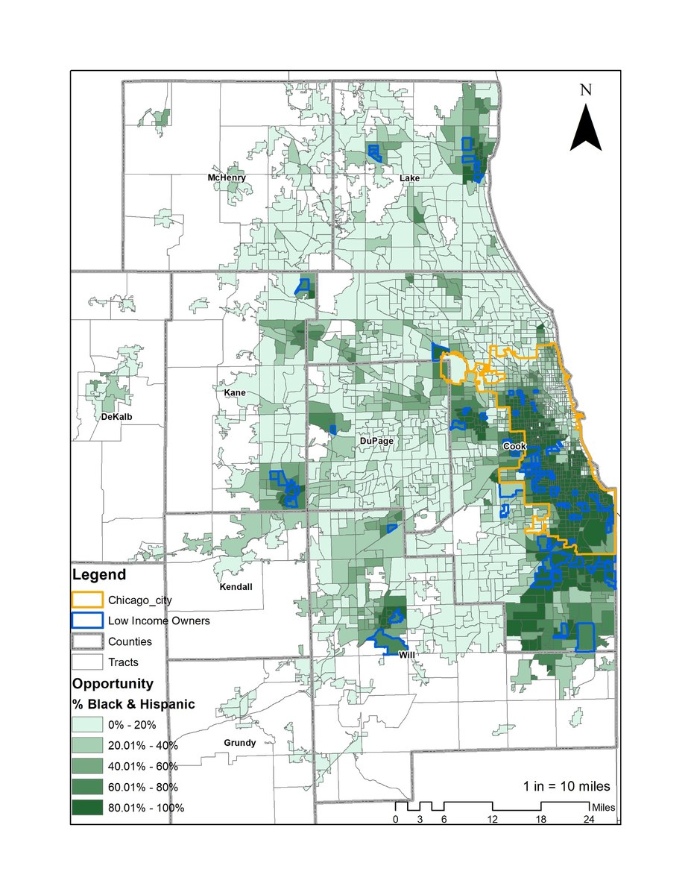

Housing & Community Development
Community Infrastructure and Spatial Opportunity in Metropolitan Chicago
Research on how opportunity metrics, racialized spatial patterns, and intermediary organizations shape support systems for low-income and minority homeowners.

Overview
This work examines the limits of conventional opportunity mapping by asking what neighborhood opportunity misses when it focuses primarily on place-based indicators. For low-income and minority homeowners, access to supportive organizations can be just as important as access to neighborhood amenities.
The research maps HUD-certified housing agencies, anchor organizations, and faith-based institutions to examine the geography of community support infrastructure in metropolitan Chicago.
Map gallery
Selected figures from spatial analysis of opportunity, race, and intermediary networks in the Chicago region.

